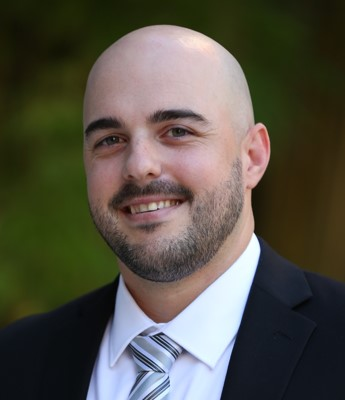

Blake Canziani

I am an Accounting PhD candidate at the University of Florida, Fisher School of Accounting. I am a job market candidate in the fall 2026 and spring 2027 market and am expecting to graduate in May of 2027. My research interests include archival audit and financial accounting. Specific areas include audit quality, auditor decisions, disclosure, and strategic behavior. I enjoyed my experience teaching Business Processes and Accounting Information Systems, but I am open to teaching Auditing, Cost Accounting, or Financial Accounting.
I am married to my best friend and am a proud new father to an awesome baby boy. Outside of work and infant development, you might find me playing guitar or drums, cooking, or taking a short ride on the DR-Z – or having deep, philosophical arguments with Grok. I also enjoy a good happy hour with my fellow faculty and PhD students (and workshop speakers).